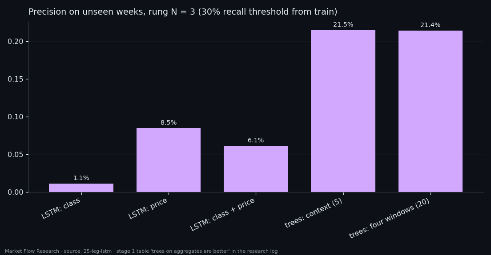
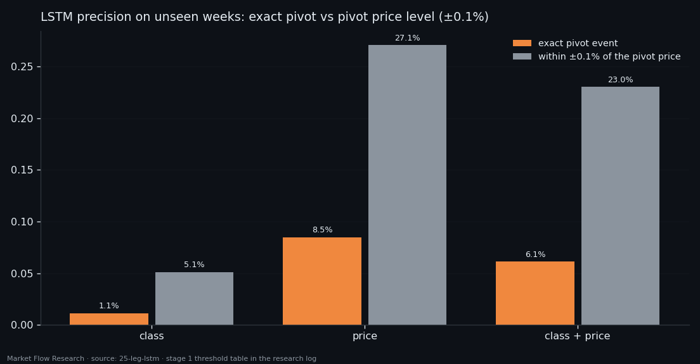

Can a Memory Network Rebuild Context From the Raw Sequence? Not From the Order Book
Trees won the reversal ladder with hand-made aggregates: five numbers about recent extremes over four look-back windows. A memory network should not need them — the price change of every event is already inside the class, and integrating it would rebuild the whole context. We gave an LSTM 60 events of raw class, of price context, and of both. The class alone reached an honest AUC of 0.77; price context alone, 0.965. Adding the class to price made it worse. And trees on five aggregates still found reversals two and a half times more precisely than the network.
① The question: is the class enough?
Studies 23 and 24 worked with aggregates: before any model saw the data, ten events were folded into medians, slopes and peak positions, and the context windows (200 to 1,600 events) were chosen by hand. A network with memory asks for none of that — it gets the sequence of events as is and must build long context itself.
The question is not rhetorical. One of the seven features of the class is `d_price_avg`, the price change per event. Integrated over a window, it rebuilds the price path, and from the path, everything the context numbers contained. Does the network do it?
The setup mirrors study 24: the first rung of the ladder ("a pivot three events ago", about ten minutes), windows of 60 events (three and a half hours) taken at every event, six coins, split on 14 August. That gives 167,571 windows and 696 reversals. Three channel sets: the raw class (63 numbers per event), price context (the five context numbers on four windows, 20 channels), and both. An LSTM with 96 units and one logit; the epoch is chosen by the honest average precision from held-out-coin runs, and the threshold is set on those same honest scores — validation is never used for any choice.

② The class alone falls far behind price
The gap is sharp. The class gives an honest AUC of 0.772 (0.735 on unseen weeks); price context, 0.965 (0.950). The network does not rebuild from `d_price_avg` what the ready-made position numbers provide.
At the threshold fixed from training (30% recall), the class-only network raised 2,198 false signals for 26 hits across 94 pivots on the three unseen weeks: precision 1.1%. Price context: 32 hits, 275 false, 8.5%. And class plus price is worse than price alone — 0.926 honest AUC, 6.1% precision, 17 hits. Sixty-three class channels do not just add nothing; they take capacity the network would have spent on price.
One improvement over the earlier memory networks: with three times more positives (696 reversals instead of 223), the network stopped memorising grossly — honest 0.965 and validation 0.950 almost coincide.

③ Trees on five numbers still win
Compared on the same rung and the same unseen weeks, gradient boosting from study 24 beats every network: 21.5% precision on the five context numbers, 21.4% on four windows, AUC up to 0.987 — against 8.5% and 0.950 for the best LSTM, even though that LSTM sees the same twenty numbers laid out over time.
The reason is built into the setup. The network sees 60 events; the scale that decides whether a local extreme is the extreme of the leg is up to 1,600 events — four days. Longer windows were not an option: beyond 60 events fewer than two hundred reversals would remain for training. So the LSTM here is not "the step after trees"; it is a different formulation that lacks the length it needs. Its hyperparameters were not searched either; a grid could lift the class-only network somewhat, but not across a gap of this size.
A ±0.1% price tolerance lifts the price-context network threefold (8.5% → 27.1%): it points at the level of a reversal well and at its moment poorly — the same limit as trees on a single window. The practical conclusion is the one this series keeps meeting: the useful information about reversals lives in the position of price within the move over days, and that is best handed to a model directly, as a few well-chosen numbers.

Reproduce this study
- Research log (.md, Ukrainian): goal, data, plan, scripts, every confirmed stage and table — enough to rerun the study
- Reproduction kit (.zip): the study's scripts, project rules and base scripts that build every class
If this changed how you read the tape, the natural next step is Volume Is the Fuel — Not the Steering Wheel — We recorded the Binance order book every second for six coins over five months and ran eighteen tests on what volume really does.
Volume Is the Fuel — Not the Steering Wheel
We recorded the Binance order book every second for six coins over five months and ran eighteen tests on what volume really does.
About Market Research Lab — What We Collect and Why
Most market commentary is storytelling.
From Calm to Calm: a Standard for What Counts as a Signal (BTC)
We stopped defining market signals with a stopwatch.
The Wall That Goes Quiet: What Resting Liquidity Predicts
We measured resting limit liquidity sitting on both sides of the book second by second across six coins, and asked the only question that matters:….
Comments
Discussion is powered by GitHub. Enable it by adding secrets/giscus.json (repo IDs from giscus.app).